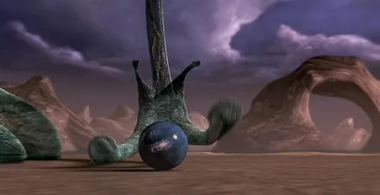

Я - нет. Считаю ли я, что жизнь есть только на Земле, а разумом наделен только человек (и то не каждый) - тоже нет. Вероятность того, что в нашей бескрайней вселенной так "повезло" исключительно нам, на мой взгляд, невелика. Но такой же небольшой я считаю вероятность того, что иные жизнь/разум достаточно похожи на наши, чтобы отличаться только зеленым цветом кожи и формой черепа.
Что я имею в виду: во вселенной запросто могут оказаться принципиально другие формы жизни или разума. Кто вообще сказал, что инопланетное существо должно быть существом в привычном нам понимании? Это у нас жизнь - это форма существования белковых тел. А "там" - может, это вообще волна? Или заряд. Или какое-то неведомое нам метафизическое явление, у которого нет ручек, ножек, огромных глаз и приплюснутого черепа - вообще нет тела как физического вместилища жизни/разума.
Почти 30 лет назад меня сильно впечатлил фильм "Люди в черном". Притом не основная его часть (где как раз более типовые для фантастики заходы), а коротная сцена перед титрами, где "камера", драматически отдаляясь от Земли, показывает ничтожность нашей цивилизации в масштабах метавселенной. Ну помните, где странное существо с тентаклями играет галактиками в нарды (или типа того)?
По той же причине я сомневаюсь в реальности контакта с внеземными цивилизациями. В фантастике, изображающей такой контакт, есть предположение, что проблема лишь в переводе. Но кроме языкового барьера могут быть и другие. Например, может инопланетяне настолько огромны, что наша планета для них лишь песчинка - как тут поболтать о том, о сем? А может, в их форме существования не применимы такие понятия, как зрение и слух, поэтому мы их не можем увидеть и услышать, а взаимодействуют они через магнитное поле? Или эта другая жизнь существует в других измерениях, и мы просто не пересекаемся.
Вариантов масса, и я очень сомневаюсь, что мы с инопланетянами совпадем по достаточному количеству факторов, чтобы взаимодействие (или хотя бы обнаружение) было возможно. Да, мы не одни. Но рассчитывать, что к нам прилетят зеленые человечки на летающей тарелке и расскажут нам, как жить дальше - я бы не стал. Будем полагаться на себя.
